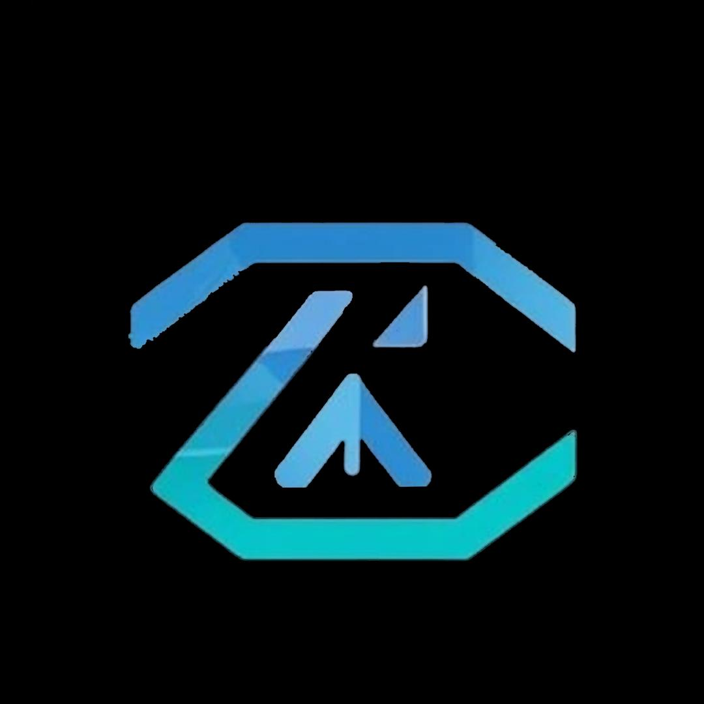
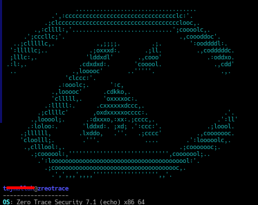

مشروع تقني مستقل طوره فريق من الشباب المبدعين لتقديم بيئة اختبار أمنية سريعة، متخفية وقوية.
تحميل الإصدار المستقر
> [SYSTEM OPTIMIZATION: ACTIVE]نحن فريق مستقل من المطورين نهدف لكسر القيود التقنية وتوفير أدوات حماية متطورة للجميع. ZeroTrace صُمم ليكون توزيعة خفيفة تدمج بين القوة والخصوصية التامة في اختبار الأنظمة.